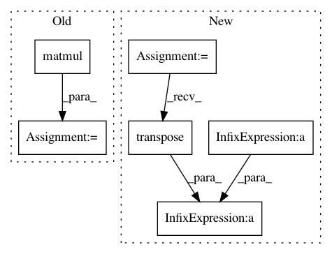

9af9ab51cee0c212ba1c689ae047558889464bc2,test/likelihoods/test_general_multitask_gaussian_likelihood.py,TestMultiTaskGPRegression,test_multitask_low_rank_noise_covar,#TestMultiTaskGPRegression#,56
Before Change
task_corr = _eval_corr_matrix(likelihood.task_noise_corr_factor, likelihood.task_noise_corr_diag)
noise_diag = likelihood.noise_covar.log_noise.squeeze().diag().exp().sqrt()
task_noise_covar = noise_diag.matmul(task_corr).matmul(noise_diag)
self.assertGreater(task_noise_covar[0, 0, 1].item(), 0.05)
if __name__ == "__main__":
After Change
likelihood.eval()
num_tasks = 2
task_noise_covar_factor = likelihood.task_noise_covar_factor
noise = likelihood.noise
task_noise_covar = task_noise_covar_factor.matmul(
task_noise_covar_factor.transpose(-1, -2)
) + noise * torch.eye(num_tasks)
self.assertGreater(task_noise_covar[0, 0, 1].item(), 0.05)
In pattern: SUPERPATTERN
Frequency: 3
Non-data size: 6
Instances
Project Name: cornellius-gp/gpytorch
Commit Name: 9af9ab51cee0c212ba1c689ae047558889464bc2
Time: 2018-11-22
Author: balandat@fb.com
File Name: test/likelihoods/test_general_multitask_gaussian_likelihood.py
Class Name: TestMultiTaskGPRegression
Method Name: test_multitask_low_rank_noise_covar
Project Name: geomstats/geomstats
Commit Name: 315990901cdcdca241013ee5e6c581391bae2523
Time: 2020-12-15
Author: yann.thanwerdas@gmail.com
File Name: geomstats/geometry/spd_matrices.py
Class Name: SPDMetricBuresWasserstein
Method Name: inner_product
Project Name: geomstats/geomstats
Commit Name: 315990901cdcdca241013ee5e6c581391bae2523
Time: 2020-12-15
Author: yann.thanwerdas@gmail.com
File Name: geomstats/geometry/spd_matrices.py
Class Name: SPDMetricBuresWasserstein
Method Name: exp